Tires with Emergency Running Characteristics and Tire Pressure Warning Systems All Models
360299(469)
Tires with emergency running characteristics and tire pressure warning systems all models
General information
Warning systems
BMW AG offers two different systems to warn the driver of a drop in tire pressure.
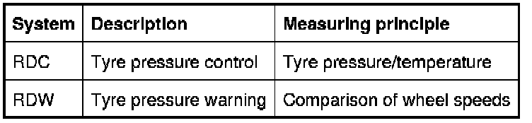
Emergency running systems
In addition to the warning systems, two emergency running systems are also employed to prevent a depressurized tire from caving in:
Components of emergency running system with self-supporting tires:
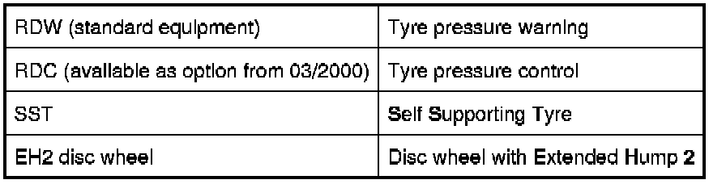
Components of emergency running system with integrated support ring:
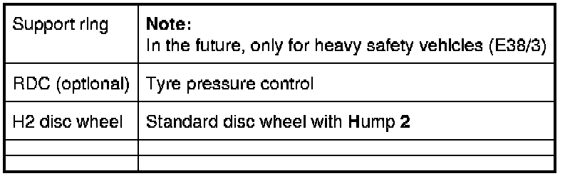
Tire pressure control (RDC)
RDC system description
RDC permanently monitors the tire pressure and the temperature in the tires, both while the vehicle is being driven and when it is stationary. Data is transmitted via data telegram by the wheel electronic units to the antennas installed in the wheel housing and on to the RDC control unit. There, the data received is compared with the stored limit values.
After correcting the air pressure with the engine off and the ignition on, press the Set button and hold (approx. 6 seconds) until the words "Set tire pressure" appear in the instrument cluster (instrument cluster high) or the yellow LED lights up (basic instrument cluster).
If the limit values are exceeded, the driver will be warned via the instrument cluster in two stages, as follows:
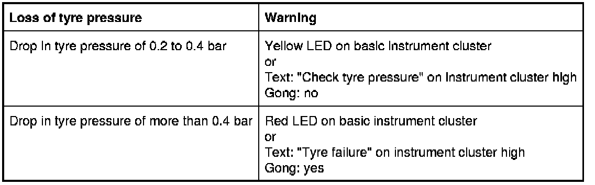
Advantages of RDC
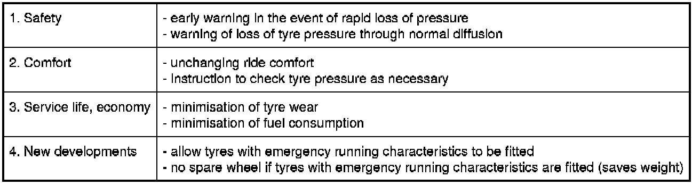
RDC system layout
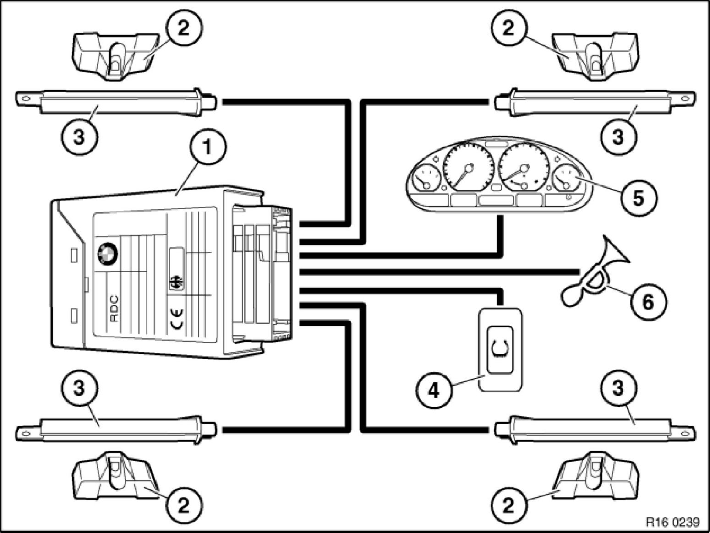

Component description
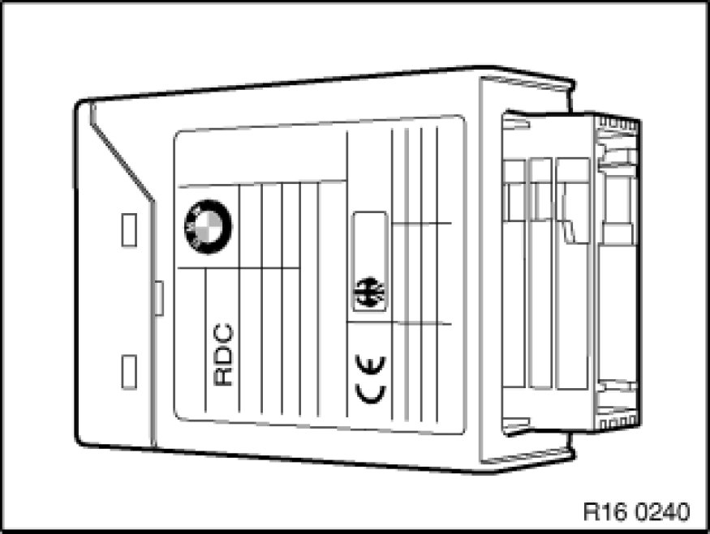
RDC control unit
Fully diagnosis-compatible
Task:
evaluates the following telegrams from the wheel electronic units:
- tire pressure
- tire air temperature
- identification number (ID) of wheel electronic unit
- remaining service life of wheel electronic unit battery
If required, information or a warning is transmitted.
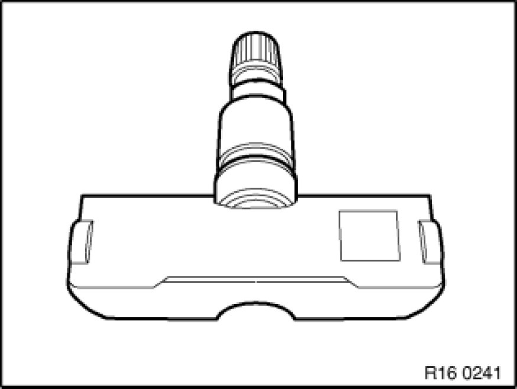
Wheel electronic unit with valve
Components:
- pressure sensor
- temperature sensor
- transmitter
- frequencies according to country
- power supply
- service life: approx. 7 years
- not exchangeable
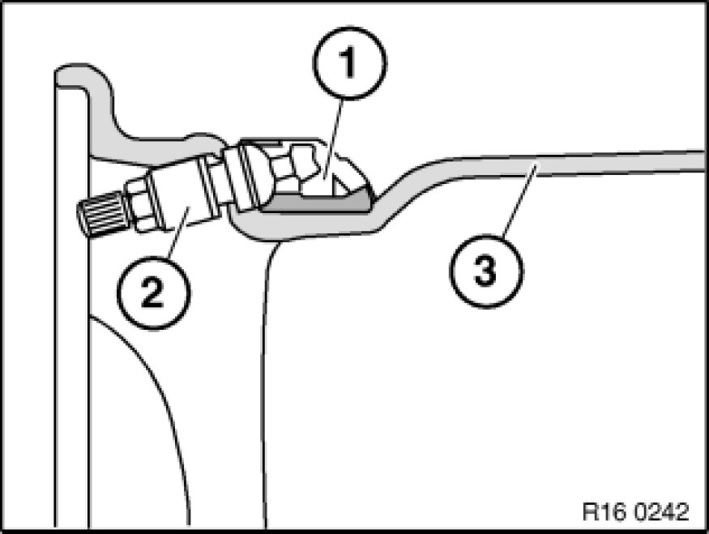
Installation location of wheel electronic unit in disc wheel
The wheel electronic unit (1) is screwed to the valve (2) on the disc wheel (3)
Identifying feature:
metal tire valves
Note:
Different valves have to be used to allow for the different disc wheel sizes. The valves are color-coded. The correct coding can be taken from the spare parts catalog.
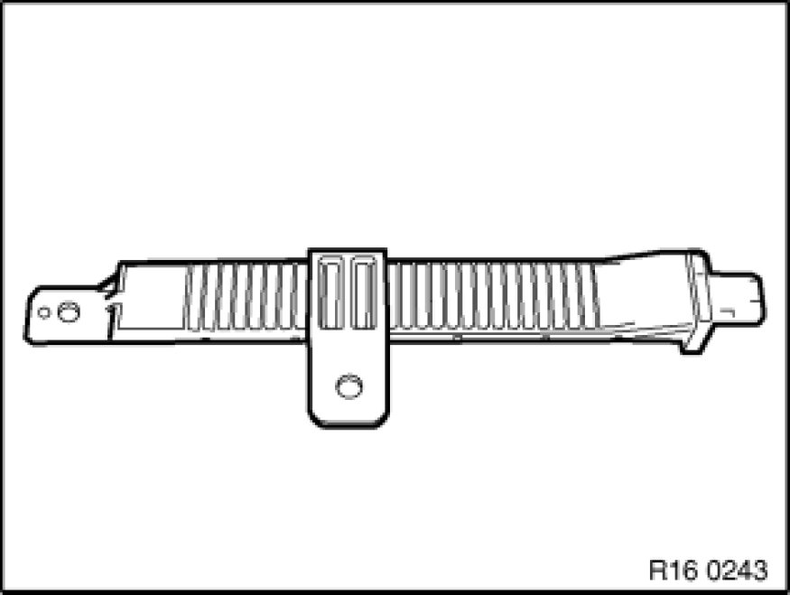
Antenna
There is an antenna in each wheel housing.
Task:
receives telegrams and forwards these to the RDC control unit.
Component description
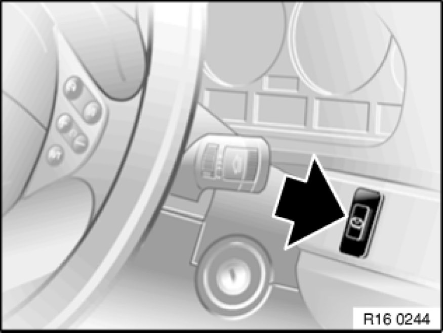
Set button
Installed in the instrument panel to the right of the steering wheel. (E46: in the center console)
Symbol: tire cross-section
Task:
initialization after resetting cold tire pressure or after changing tire or wheel location.
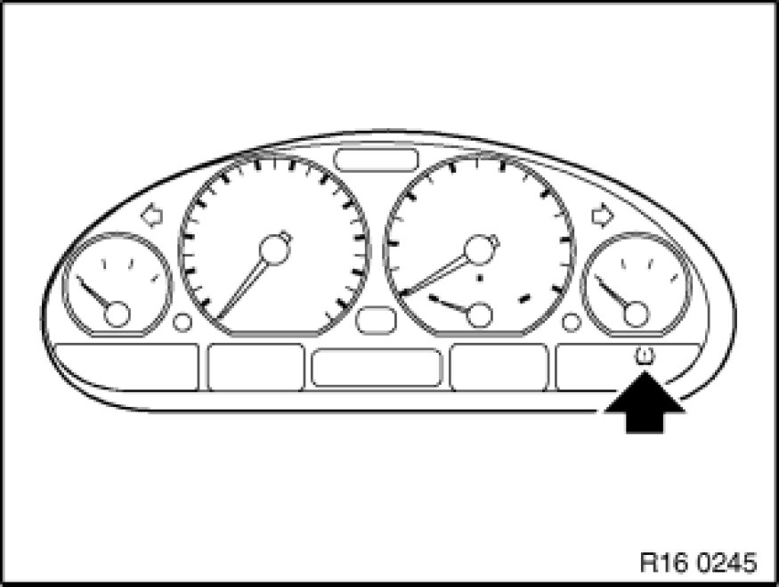
Display element in instrument cluster
Indicator lamp lights up yellow:
- drop in tire pressure of 0.2 to 0.4 bar
Indicator lamp lights up red:
- drop in tire pressure greater than 0.4 bar
Tire pressure warning RDW
RDW system description
RDW measures the wheel speeds on all four wheels, using the wheel speed sensors of the ABS/ASC or ABS/DSC system. It compares the wheel speeds of the diagonally opposite wheels and of the average speed.
In the event of a drop in tire pressure, the dynamic diameter of a wheel will change, leading to a changed wheel speed.
A drop in tire pressure of 30 ± 10% can be detected on all wheels from about 15 km/h (10 mph) up to the vehicle's top speed.
If this value is exceeded, the driver will be warned via the instrument cluster as follows:
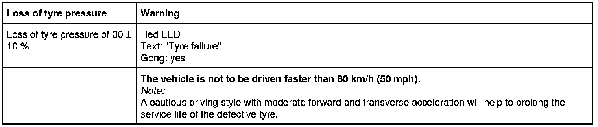
Advantages of RDW
With two exceptions, the advantages of RDC also apply to RDW.
Exceptions:
- no warning of loss of tire pressure through normal diffusion
- tire pressure still have to be checked regularly, every 14 days
RDW system layout
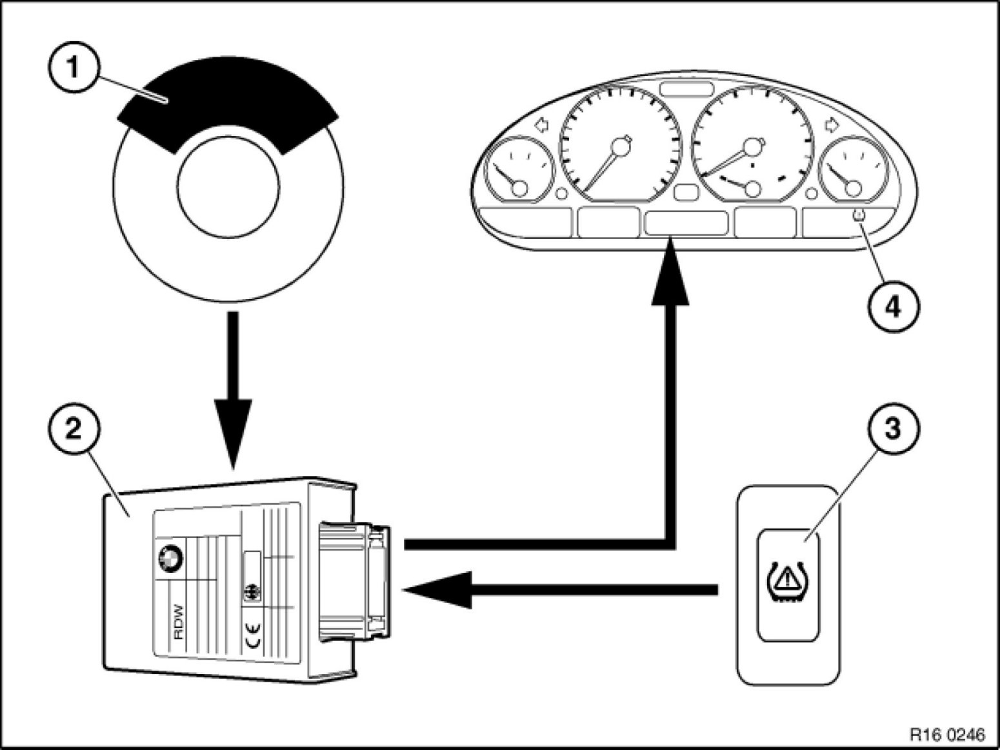
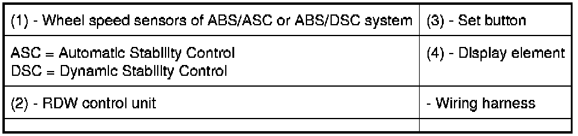
Component description
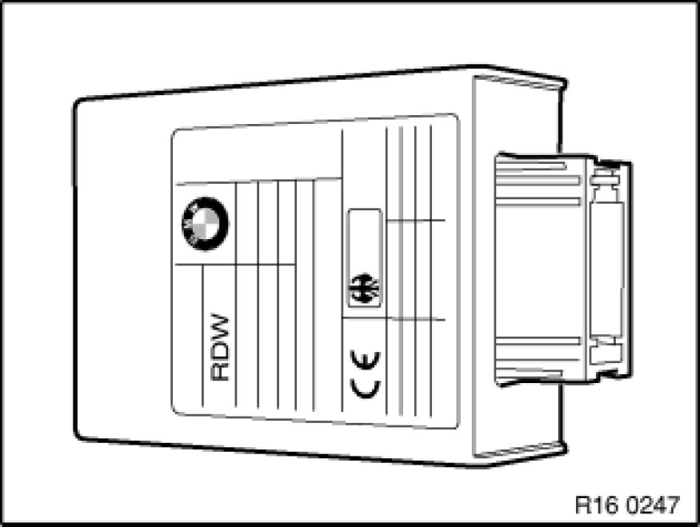
RDW control unit
Fully diagnosis-compatible
Task:
- evaluates wheel speeds.
- a warning is transmitted as required.
Set button
Installed in the dashboard to the right of the steering wheel. Symbol: tire cross-section with warning triangle
Task:
initialization after resetting cold tire pressure or after changing tire or wheel location.
Display element in instrument cluster
Indicator lamp lights up red:
- drop in tire pressure 30 ± 10%
Emergency running systems
Introduction
Tires with emergency running characteristics can still be used for a certain distance even if they suffer a complete loss of pressure. There are two different systems which meet these requirements:
- emergency running system with self-supporting tires
- emergency running system with integrated support ring
Emergency running systems setup
Emergency running system with self-supporting tires
The side walls of the self-supporting tire are reinforced. In conjunction with a special disc wheel, the tire can still be used for a certain distance even if it suffers a complete loss of pressure.
Mobility is retained for the following distances up to a speed of 80 km/h (50 mph) and with a cautious, suitably adapted driving style:
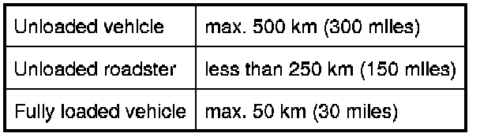
Self-supporting tires demand permanent monitoring of the tire pressure to ensure that the driver is given adequate warning if pressure is lost during a journey. For this reason, these tires are only available in conjunction with the warning system RDW and from 03/00 also with RDC.
To prevent the self-supporting tires from becoming detached from the disc wheel in the event of a complete loss of tire pressure, they must be fitted to newly developed wheels with modified disc wheel humps, but with unchanged tire seating (= standard disc wheel).
However, the new wheels can also be used for standard tires of the same size.
Comparison standard tires / self-supporting tires
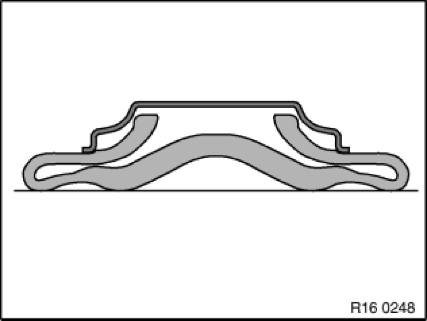
Standard tires, unpressurized
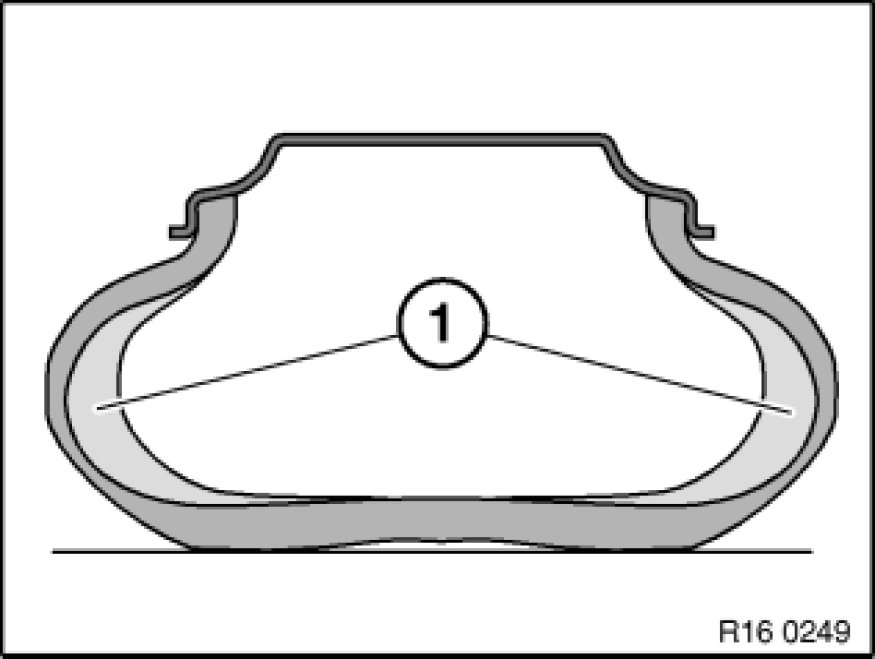
Self-supporting tires, unpressurized
Envulcanized reinforcement (1) made of a temperature-resistant rubber compound.
Disc wheels
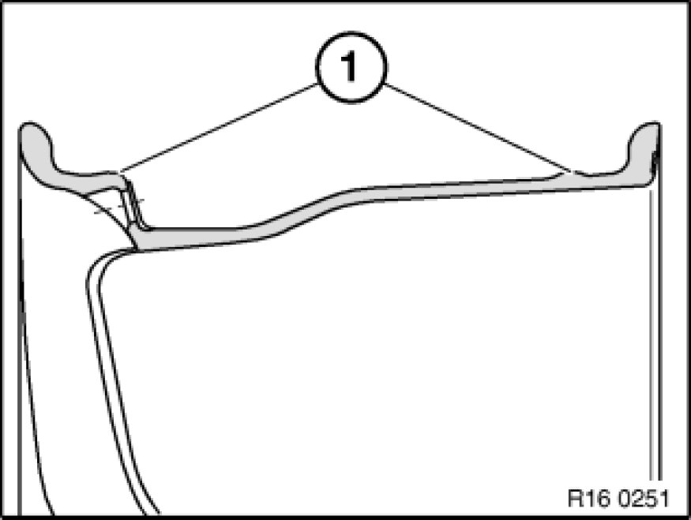
H2 disc wheel (standard disc wheel) for emergency running system with integrated support ring
(1) Hump 2 of standard disc wheel
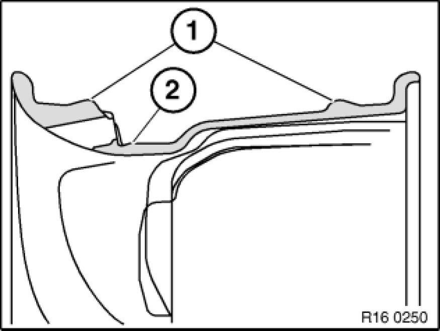
EH2 disc wheel for emergency running system with self-supporting tire
(1) Extended Hump 2 of disc wheel
(2) Drop center relocated a few millimeters to the center (precentering on outside)
Note:
The new EH2 disc wheels (extended Hump 2 inner and outer) will be used more frequently on BMW vehicles in the future as they can also help to delay standard tires from being lost in the event of a drop in tire pressure.
Example: from current 1.1 bar to 0.6 bar (X5 or Land Rover disc wheel)
Emergency running system with integrated support ring
(In the future, primarily on heavy safety vehicles)
The support ring is made of a high-strength resilient plastic and is fitted on the disc wheel inside the tire. The support ring can only be removed using special tools which have been specially approved by BMW. It can only be removed after destroying the tire.
Emergency running systems with integrated support ring are used in particular on heavy safety vehicles. They allow the vehicle to be driven away from a potential danger without dropping speed even if the tires have suffered a complete loss of pressure (flight situation).
It is possible as an option to have the tire pressure monitored by an RDC system. The RDC is installed by pressing the components into the support ring before it is fitted.
Wheel structure with integrated support ring
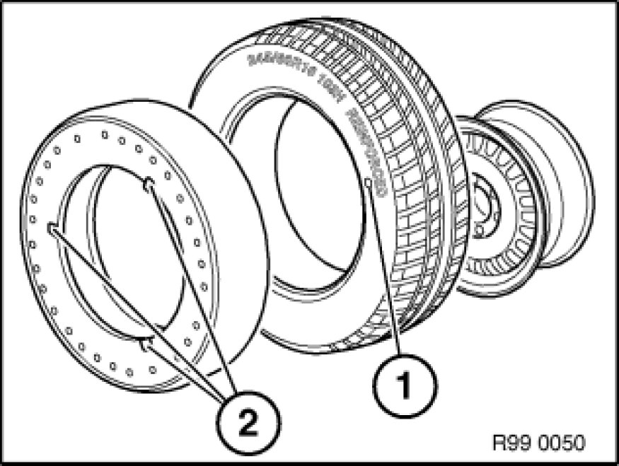
Emergency running system with integrated support ring
(1) Tire
(2) Support ring
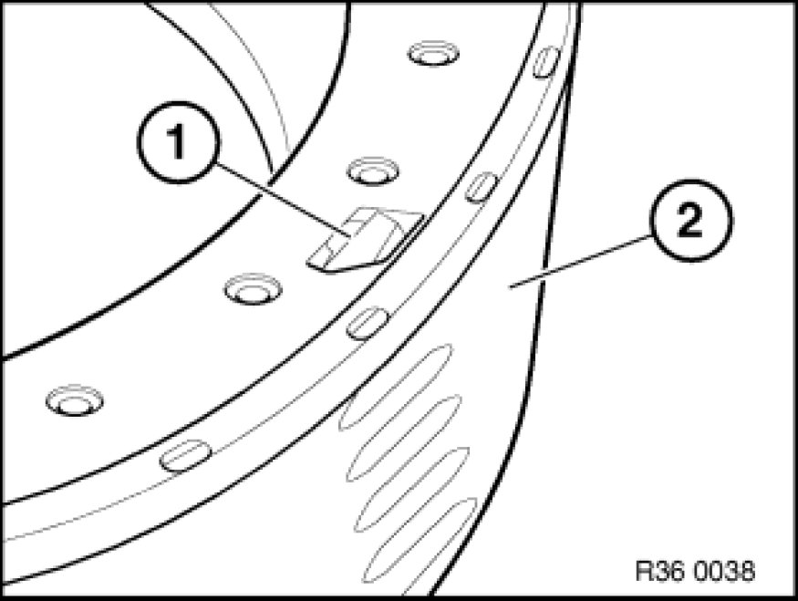
Installation location of RDC wheel electronic unit
(1) Wheel electronic unit
(2) Support ring
For further information on the subject of "Tire pressure warning systems and tires with emergency running characteristics", please refer to the vehicle Owner's Handbook.
A Parts Information bulletin will be published with information on how to order parts.
Functional and system descriptions are not subject to change. Parts availability and immediate ordering availability cannot be derived from this information. The specialized departments will inform the markets with further details at the appropriate time.